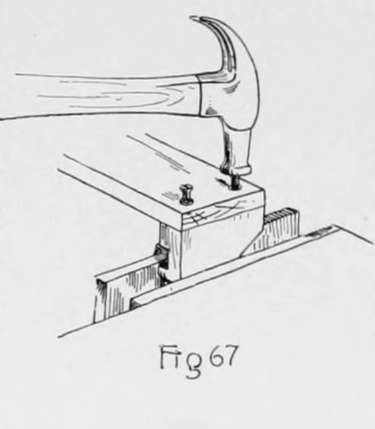
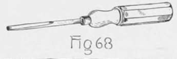
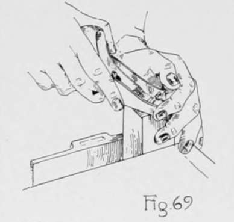
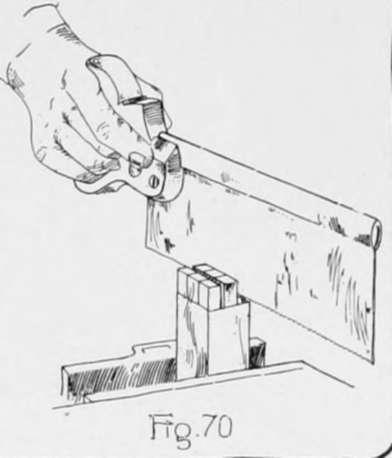
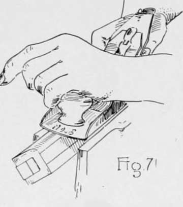

Chiseling And Planing. Continued
Description
This section is from the book "Beginning Woodwork At Home And In School", by Clinton Sheldon Van Deusen. Also available from Amazon: Beginning Woodwork At Home And In School.
Chiseling And Planing. Continued
(k) Clamp the piece in the vise with the working face up and the end on which the gage lines were made at the right and a little above the top of the bench. With the 5/16" chisel remove the wood bounded by these lines between the hole and the end of the piece. First, cut as in Fig. 66, making a groove a little wider than the chisel, and nearly down to the gage line. Turn the chisel on edge and pare out nearly to the other gage lines. Now using the chisel as in Chapter VI, r, form good right-angled edges where the gage lines are, and continue the paring until the groove is of a uniform width and depth.
(1) Now bring the two end pieces to length by sawing a little beyond the knife lines that were drawn around the piece in e, and then block-plane each piece to the knife line. Using the pencil and try-square as in Fig. 30, draw pencil lines across each of these block-planed ends parallel to and as far from the joint side as the width (22) of the bottom of each end piece. In a similar manner draw pencil lines across the sides opposite the joint sides parallel to and as far (11) from the ends block-planed last as the obtuse-angled corner is to be above the bottom of the end piece. With the straight-edge and knife, draw lines on the working face and the surface opposite, connecting the ends of these pencil lines. Clamp the piece in the left end of the vise so that these knife lines are vertical, and saw a little outside of the line. Next, clamp the piece in the vise with this sawed surface in a horizontal position, with the wider end of the piece to the right and then block-plane to the lines.
(m) Now clamp one of these end pieces in the vise with the joint side up, and place the back piece on it with its working face down, its end even with the surface of the end piece opposite the working face, and its sides even with the ends of the end piece. Hold it in this position; then place the two screws in the holes in the back and strike them lightly with the hammer (Fig. (57). Now with the 4/32 twist-bit, bore a hole 1/2" deep at each of the points located by the screw points. In a similar manner the two holes for the screws may be located and bored in the other end piece. The back may now be screwed to the two end pieces by using the screwdriver (Fig. 68).
(n) Plane the piece for the roller by the rules for planing to length (23), width (11), and thickness (11). In block-planing the ends of such a piece as this it is not convenient to use the bench-hook but the piece should be clamped in the vise (Fig, 69). and planed from each corner toward and about two-thirds of the way to the diagonally opposite corner, testing with the try-square to determine when it is square with the working face and joint side.
(o) Draw knife lines square around the piece 7/16" from each end; then set the gage to 5/16", and with the gage block against the working face, gage from these knife lines to the ends of the piece on the joint side and the side opposite and across each end. Also, with the gage-block against the joint side, gage from these knife lines to the ends of the piece on the working face and the surface opposite and across each end. Now change the set of the gage to 15/16 and gage again in the same manner as above.
(p) Clamp the piece in the vise in a vertical position with the working face to the front, then with the back-saw start a cut in the end of the piece, so that the left edge of the saw teeth will just cut to the center of the right hand gage line (Fig. 70). Use great care in doing this sawing and continue it until about 1/32 from the knife line. In a similar manner saw so that the right side of the saw teeth cut to the center of the left hand gage line. Turn the piece in the vise so that the joint side is toward the front and make two more saw cuts as above. Now place the piece on the bench-hook, and holding it as in Fig. 16, saw off the pieces outside of these saw cuts, sawing so that the left side of the saw teeth cut exactly to the knife line. This will form a square prism projecting from the end of the piece. In the same manner form a similar prism on the other end of the piece.
(q) Draw two light knife lines across any part of the working face exactly 1 1/4" apart; these lines with the parts of the edges between them will form a square. Measure accurately the length of the diagonal of this square and set the gage to exactly one-half the length of this diagonal. With the gage-block against the working face gage a light line the entire length of the joint side and the side opposite. In a similar manner place the gage-block against each of the other three surfaces and gage two lines. This will make two gage lines on each surface.
(r) Clamp the piece in the vise with one of its edges upward and above the top of the vise. Plane off this edge with the jack-plane, forming a chamfer (Fig. 71). Continue planing until just down to the gage lines made in q, testing the chamfer with a straight-edge (Fig. 39). In a similar manner plane a chamfer in place of each of the other three edges. The piece for the roller should now have eight equal-width surfaces. Mark a pencil line across each of these eight surfaces. The center line of each of these will be on the finished roller.
(s) Clamp the piece in the vise again with one of its eight edges upward and above the top of the vise; then with the jack-plane take off a few cuts forming a narrow surface in place of the edge. Endeavor to have this new surface make equal angles with the two surfaces adjacent to it. In a similar manner form a new surface in place of the seven other edges. The roller now has sixteen surfaces and unless too heavy cuts have been taken the eight new surfaces are narrower than the eight original ones which have the pencil marks on them. A little at a time should be planed from each of the newly made surfaces until all sixteen surfaces are of the same width. Make a pencil line on the eight new surfaces.
(t) Following the same method as in s, with the plane set light, the sixteen edges may be replaced by sixteen surfaces of such a width that there will be thirty-two equal-width surfaces, and it is possible that some may be able to continue the process until sixty-four equal-width surfaces are formed, but do not touch the plane to the roller unless sure that an edge can be replaced by a surface narrower than those already on the piece.
(u) By a method similar to that used in planing the roller the square prisms on the ends of the roller may be made round, using the chisel instead of the plane. In doing this work make sure that each step is well completed before starting the next.
(v) The surface of the roller may now be smoothed by wrapping a piece of sandpaper around the roller and rubbing it lengthwise until the surface is smooth and the grain of the wood is brought out clear. The roller may now be placed in position by inserting one end in the hole in the left end piece and sliding the other end down the slot in the right end piece. Two 1 1/2" No. 10 flat-head screws should be used to fasten the completed piece to the wall.
Continue to:
- prev: Chapter VII. Chiseling And Planing
- Table of Contents
- next: Chapter VIII. Furniture Making-Keyed Construction